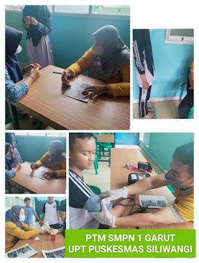

© 2023. Puskesmas Siliwangi All Rights Reserved.
Artikel
Pemeriksaan kesehatan gizi anak dianjurkan untuk semua anak, dari bayi hingga remaja. Sejak kebutuhan gizi anak berubah setiap tahun karena bertambahnya usia, oleh karena itu anak perlu menjalani pemeriksaan gizi setahun sekali. Kunjungan ini dapat dijadwalkan dengan penyedia layanan kesehatan primer anak atau dokter anak.
Tujuan dari pemeriksaan gizi anak adalah sebagai berikut: * Untuk memeriksa apakah kebutuhan gizi anak terpenuhi * Untuk memeriksa apakah kesehatan fisik anak dalam keadaan yang baik * Untuk memeriksa tanda-tanda peringatan dini dari masalah kesehatan sehingga dapat diatasi dengan segera * Untuk membantu orang tua membuat rencana diet sehat untuk anak-anak mereka. Meskipun anak tidak memiliki jadwal konsultasi dalam waktu dekat, jika orang tua merasa ada masalah dengan kebiasaan makan anak mereka dan mencurigai adanya kekurangan gizi dan berhubungan dengan berat badan. Dokter anak atau spesialis gizi anak akan memeriksa tanda-tanda masalah yang berhubungan dengan berat badan dengan hati-hati
Malnutrisi - Seorang anak kurang gizi jika ia tidak mendapatkan nutrisi yang tepat dan cukup. Hal ini dapat disebabkan oleh kurangnya makanan atau tidak mengonsumsi makanan sehat atau bergizi dengan cukup atau makan terlalu banyak makanan yang tidak sehat. Obesitas - Seorang anak kelebihan berat badan atau obesita, jika ia memiliki berat lebih dibandingkan berat idealnya. Hal ini berbeda dari yang bertulang besar, tapi anak menjadi lebih gemuk dari anak ukuran normal.